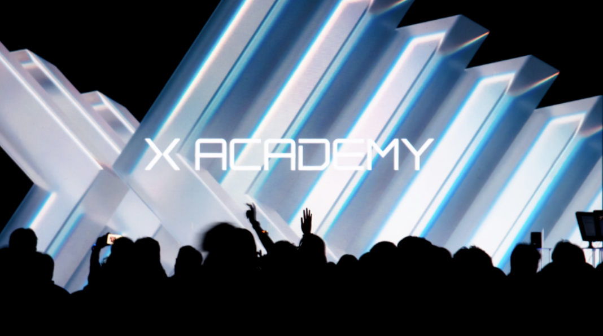

返回
X Academy 助教与社区负责人
概述
X Academy 是一个为期两周的科技夏令营，主要面向国际高中生，每年服务约 300 名学生，平均班级规模约 25 人。作为《数据科学导论》（2023）和《自然语言处理》（2024）课程的助教，我参与共同开发课程体系、设计并主持实验课，并指导学生的毕业项目。2025 年，作为课外活动组织者，我负责组织营队活动，并担任学生的主要协调人。

教学
为了帮助学生更好地理解计算机科学概念，我根据学生的兴趣设计了实验练习，让抽象的理论和后端代码更易于理解。
01 · 数据科学
数据清洗实验
一个 90 分钟的实验，学生清洗、整合、推断并转换杂乱的真实众筹数据。
查看详情
02 · 自然语言处理
语言模型与困惑度实验
一个 90 分钟的实验，评估预构建的 N-gram 基础设施并实现困惑度评估引擎。
查看详情
概述： 一个 90 分钟的动手数据科学实验，学生扮演学生会主席的角色，清洗、整合、推断并转换杂乱的真实校园众筹数据。
核心技术栈：
Python
Jupyter Notebook
Pandas
数据清洗
特点：
情境化学习： 使用贴近生活的校园慈善募捐数据集，包含 200+ 条杂乱记录，涉及货币文本、负异常值、空白键和缺失成绩。认知框架构建： 建立 4 阶段思维模型（清洗、整合、推断、转换），让学生能够直观地审查原始数据集，并知道在未来数据项目中应执行哪些操作。
概述： 一个 90 分钟的动手 NLP 实验，高中生分析预构建的 N-gram 语言模型基础设施，并完成困惑度评估引擎，以评估语言模型的不确定性。
核心技术栈：
Python
Jupyter Notebook
N-Gram 建模
困惑度
特点：
阅读-理解-补全脚手架： 预实现数据预处理、分词和 N-gram 计数模块；卸载语法负担，让零基础学生能够完全专注于阅读、理解并补全核心评估逻辑。流程图引导的概念映射： 使用可视化流程图描绘端到端数据管道（文本 → 词元 → N-gram → 概率 → 困惑度），帮助学生直观地追踪执行逻辑。